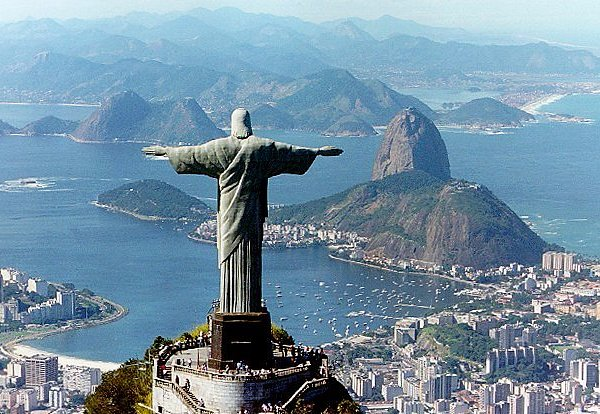

El Cristo Redentor es una estatua de 38 metros sobre un pedestal de 8 metros ubicado en Río de Janeiro, Brasil. Es considerado una de las 7 maravillas del mundo.
El Cristo Redentor es una icónica estatua de Jesucristo situada en la cima del Cerro del Corcovado en Río de Janeiro, Brasil. La idea de construir una estatua religiosa en la montaña surgió a principios del siglo XX como un símbolo de paz y protección para la ciudad. El proyecto ganó impulso en la década de 1920 con el respaldo de la Iglesia Católica y la comunidad local. Diseñada por el ingeniero brasileño Heitor da Silva Costa y esculpida por el escultor francés Paul Landowski, la construcción del Cristo Redentor comenzó en 1926 y finalizó en 1931. La estatua, hecha de hormigón armado y recubierta de piedra esteatita, mide 30 metros de altura y se alza sobre un pedestal de 8 metros, con una envergadura de 28 metros. Inaugurada el 12 de octubre de 1931, se ha convertido en un símbolo de fe y un emblema cultural de Brasil. En 2007, fue nombrada una de las Nuevas Siete Maravillas del Mundo. Hoy en día, es uno de los principales destinos turísticos del país y un símbolo internacional de paz y esperanza.
La cultura del Cristo Redentor simboliza la fe cristiana predominante en Brasil y el espíritu de paz, acogida y protección de Río de Janeiro. La estatua refleja la devoción religiosa del pueblo brasileño y su identidad cultural, siendo un importante punto de peregrinación. Además, el monumento es un emblema de la unidad y la esperanza para la nación, integrando la espiritualidad con la modernidad en una obra de arte. Como símbolo de Brasil, el Cristo Redentor une a la gente de diversas creencias y orígenes, destacando su carácter inclusivo. Hoy, es tanto un ícono religioso como un símbolo de la diversidad cultural y la hospitalidad brasileña.
El Cristo Redentor fue nombrada maravilla del mundo el 7 de julio de 2007
